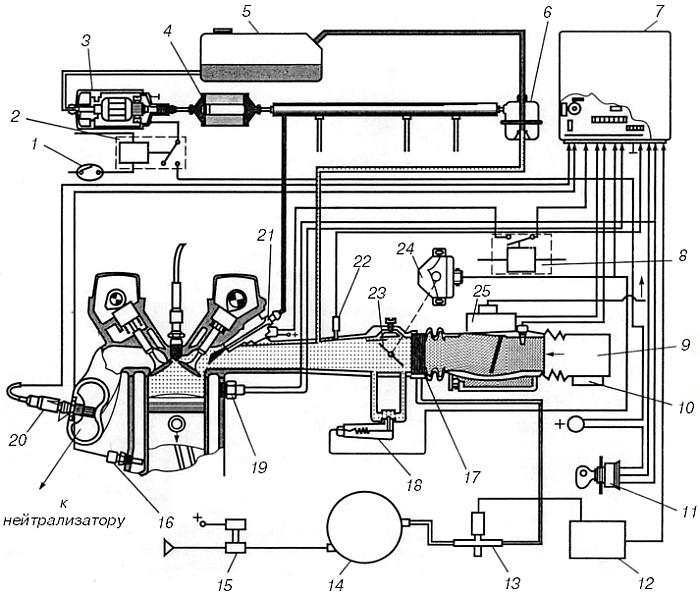

Переоборудование бензиновых впрысковых двигателей на газ
Для повышения топливной экономичности, улучшения динамики и особенно для снижения вредных выбросов выхлопных газов двигателей кандидат технических наук, профессор Московского автомобильно-дорожного института Ю. В. Панов в результате научных исследований и многолетнего опыта работы с газобаллонной аппаратурой предлагает перевод впрысковых автомобилей на газ сжиженный нефтяной.
Впрысковая бензиновая система питания (рис. 22) существенно отличается от карбюраторных и механических впрысковых.

Рис. 22. Система многоточечного впрыска: 1 – переключатель «Бензин-Газ»; 2 – реле включения бензонасоса; 3 – бензонасос; 4 – топливный фильтр; 5 – бензобак; 6 – регулятор давления; 7 – ЭБУ; 8 – дополнительное реле выключения инжекторов; 9 – корпус воздушного фильтра; 10 – предохранительный клапан; 11 – замок зажигания; 12 – согласующий электронный блок; 13 – газовый дозатор; 14 – редуктор низкого давления (газовый); 15 – электромагнитный клапан-фильтр; 16 – датчик температуры охлаждающей жидкости; 17 – газовый смеситель; 18 – клапан холостого хода; 19 – датчик детонации; 20 – лямбда-зонд; 21 – бензиновый инжектор; 22 – датчик положения дроссельной заслонки; 23 – дроссельная заслонка; 24 – шаговый электродвигатель; 25 – расходомер воздуха.
Подготовкой смеси и подачей топлива в инжекторной системе управляет бортовой компьютер.
Количество впрыскиваемого инжектором (форсункой) (21) топлива определяется сигналами, поступающими на бортовой компьютер, называемый электронным блоком управления (ЭБУ) (7). Топливо из бензобака (5) подается бензонасосом (3) и поступает далее через фильтр (4) во впускной трубопровод. Напряжение на бензонасос подается от замка зажигания через переключатель (1) и реле (2).
Топливо дозируется и впрыскивается во впускной трубопровод находящимися в нем форсунками (21), электрическая цепь которых соединена с ЭБУ. Таким образом, по сигналу ЭБУ изменяется количество топлива в камере сгорания двигателя.
Водитель управляет режимом работы двигателя, изменяя положение дроссельной заслонки (23), установленной перед впускным коллектором.
Для управления подачей воздуха при закрытой воздушной заслонке служит клапан холостого хода (18), включаемый ЭБУ по сигналу датчика положения дроссельной заслонки. Информация о количестве воздуха, поступающего в двигатель, и другие необходимые данные (положение коленчатого и распределительных валов, температура двигателя, детонация) поступают от соответствующих датчиков (16, 19, 20, 22, 24 и 25) в ЭБУ.
Важнейшим сигналом, обеспечивающим экологическую эффективность применения таких сравнительно дорогостоящих систем питания, является информация датчика кислорода. Этот датчик служит для косвенного определения и коррекции ЭБУ коэффициента избытка воздуха (l) в отработавших газах.
Устанавливаемый в выпускном тракте каталитический нейтрализатор (в обиходе катализатор) уменьшает сразу все основные компоненты вредных выбросов CO, CH, NOx, если выдерживается соотношение между топливом и воздухом для бензина 1:14,7; пропан-бутана 1:16,1; компримированного природного газа 1:17,2. Эти соотношения соответствуют l=1. Кислородный датчик называют также лямбда-зондом. Он постоянно определяет содержание неиспользованного в камере сгорания кислорода – косвенного показателя l. Эта информация позволяет ЭБУ путем изменения времени открытия форсунок (21) поддерживать l в узких пределах. Форсунка впрыскивает топливо в необходимых количествах для образования в камере сгорания смеси, для которой коэффициент l меньше единицы или близок к ней, и обеспечивает таким образом эффективную работу каталитического нейтрализатора.
Существует множество вариантов принципиальных и конструктивных схем впрысковых систем питания.
На рисунке 22 представлена схема распределенного или многоточечного впрыска. Существуют схемы центрального впрыска с одной или двумя форсунками на все цилиндры. Системы зажигания могут отличаться друг от друга, но все они управляются ЭБУ.
При переводе на газ впрысковых систем необходимо учитывать, что вмешательство в такие сложные системы может повлиять на их работоспособность и процесс подготовки смеси, начало подачи газа и его воспламенения. Если не учитывать этого, то при работе на газе могут возникнуть такие негативные явления, как хлопки в воздушном фильтре, впускном коллекторе двигателя, выход из строя бензиновых форсунок. Искрообразование происходит одновременно в двух цилиндрах двигателя, а также при большом угле одновременного открытия впускных и выпускных клапанов («перекрытие»). Из-за перебоев в искрообразовании несгоревшая газовоздушная смесь воспламеняется на такте выпуска. При этом система может перестать работать на бензине.
Прежде чем приступить к переоборудованию топливной системы автомобиля, следует проконсультироваться о предстоящих работах с представителем завода-изготовителя и, разумеется, совершенно необходимо хорошо знать бензиновую систему питания.
На впрысковые автомобили могут устанавливаться системы питания компримированного природного газа и газа сжиженного нефтяного.
Рассмотрим особенности перевода на газ на примере схемы распределенного впрыска.
Для работы на газовом топливе необходимо прежде всего отключить подачу бензина.
Существует два способа отключения подачи бензина.
Первый способ предусматривает полное отключение подачи топлива. Для этого в цепь управления штатным реле бензонасоса (3) устанавливают выключатель. Также в цепь управления форсунками (21) устанавливают реле выключения (8). Таким образом, при переключении на газ одновременно отключаются бензиновые инжекторы и топливный бензонасос.
Второй способ не предусматривает отключение бензонасоса, так как должно поддерживаться соответствующее давление бензина, чтобы без помех перейти с газа на бензин, а также избежать усыхания резинотехнических изделий системы питания. При этом сохраняется режим охлаждения инжекторов циркулирующим по основной и сливной магистралям топливом.
Для подачи газа используется газовая система питания, отличающаяся от устанавливаемых на карбюраторные автомобили тем, что в ней дополнительно установлены смеситель (17), дозатор (13) и согласующий электронный блок (12). В газовой системе могут устанавливаться блокировки подачи газа при запуске холодного двигателя и затрудненном запуске на газе.
Газовый смеситель (17) устанавливают между воздуховодом и корпусом дроссельной заслонки. Необходимое соотношение газовоздушной смеси обеспечивает дозатор газа (13). Это устройство оснащено шаговым электродвигателем, который по команде блока (12) изменяет проходное сечение трубки дозатора.
В ЭБУ заложена программа для работы на бензине, т. е. для обеспечения соотношения 1:14,7, и это необходимо учитывать при переоборудовании впрысковых автомобилей на газ. Для обеспечения коэффициента l>1 должны соблюдаться соотношения между воздухом и газом 1:16,1 (для пропан-бутана) или 1:17,2 (для компримированного природного газа). Чтобы не выполнять дорогостоящего перепрограммирования, для работы на газе применяют дополнительные согласующие электронные блоки (12). В случае отключения форсунок бензина и ряда датчиков, вместо них подключают эмуляторы – электронные устройства, имитирующие работу бензиновых форсунок при переводе двигателя на газовое топливо (они «обманывают» ЭБУ, выдавая ему сигналы, что эти отключенные приборы работают нормально).
Опыт переоборудования инжекторных двигателей показывает, что для достижения цели достаточно отключить подачу бензина, установить смеситель и обычный дозатор газобензиновых систем. Однако такой кажущийся простым способ может привести к негативным последствиям. Так, при работе на газе инжекторных систем повышается вероятность обратного распространения пламени во впускной трубопровод, расходомер и воздушный фильтр из-за внезапного обеднения смеси l>1 на переходных режимах. Возможны хлопки, которые могут разрушить корпус воздушного фильтра и повредить дорогостоящий расходомер воздуха, выполненный из платиновой проволоки толщиной 70 мкм. Для предотвращения этих явлений устанавливается дозатор, управляемый ЭБУ через согласующий блок. В корпусе воздушного фильтра устанавливают обратный предохранительный клапан («хлопушку») 1 – устройство, сбрасывающее излишнее давление во впускной трубе в момент хлопка газовоздушной смеси.
Установка остальных элементов газобаллонного оборудования аналогична переоборудованию карбюраторного автомобиля по традиционной схеме для газа.